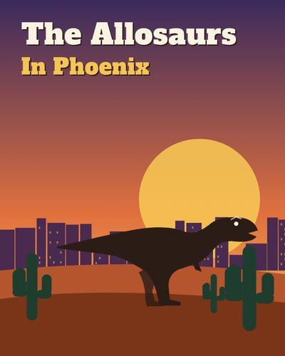
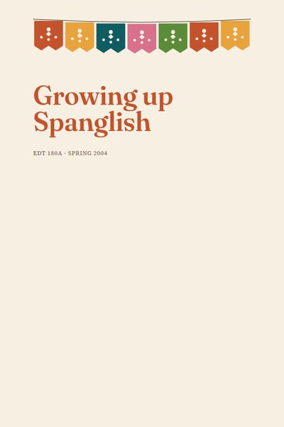

Act III · Multimodal Research Project
Sample Multigenre Projects
Hover over a book to read about the project. Click to open the PDF in our Canvas course.
These are multigenre papers, not multimodal projects: words and pictures on paper, with no audio or video. Many were made by K-12 students. Read them with that in mind. Your work will be different, for sure!
- The Allosaurs in PhoenixDinosaurs The Allosaurs in PhoenixA science-fiction story of allosaurs loose in Phoenix, told in a diary, a newspaper article, a two-voice poem, a cartoon, and an encyclopedia entry. The writer says which parts are true.
-

AI* The Allosaurs in Phoenix (AI edition)A science-fiction story of allosaurs loose in Phoenix, told in a diary, a newspaper article, a two-voice poem, a cartoon, and an encyclopedia entry. The writer says which parts are true. The writer's words, newly typeset and illustrated with AI. Compare with the original. - Blood and BraveryBram Stoker's Dracula Blood and BraveryRetells Dracula through maps, poems, and Jonathan Harker's travels, and gives the Count the voice the novel never does. The novel is itself told in letters and diaries.
- Call to ChangeRacial profiling and policing Call to ChangeSong lyrics, protest poems, a definition, and federal crime statistics ask whether racial profiling is a serious problem in American law enforcement.
- Calumet Country Club: New Members PacketWorking at a country club Calumet Country Club: New Members PacketBuilt as a welcome packet for new members: the manager's letter, a waitress's unofficial glossary of terms, and poems about golf, all from the staff side of the club.
- A Columbine ConnectionThe Columbine shooting A Columbine ConnectionWritten the summer after the 1999 shooting. A teacher at her students' funerals, a shooter's inner voice, and a poem about waiting by the TV ask questions that have no answers.
- Cracking the EggThe egg Cracking the EggStarts with childhood breakfasts, then follows the egg as a creation myth, a word (“egged on”), a hidden message, and the first step of a controversial science.
- Frozen MourningThe Titanic Frozen MourningAsks what flaws doomed a ship that could have been saved. A newspaper scene, a timeline, the disaster in numbers, and poems put you on board.
- Giving a Voice to Women - with Long or Short HairHurston's Their Eyes Were Watching God Giving a Voice to Women - with Long or Short HairThe writer reads Janie's search for her own voice beside her own, and stages Hurston's critics, including an imagined interview with Richard Wright.
- Growing Up SpanglishSpanglish and Latino identity Growing Up SpanglishTreats Spanglish as more than mixed language: a way of living between two worlds. History, statistics, and definitions follow one girl's search for where she belongs.
-

AI* Growing Up Spanglish (AI edition)Treats Spanglish as more than mixed language: a way of living between two worlds. History, statistics, and definitions follow one girl's search for where she belongs. The writer's words, newly typeset and illustrated with AI. Compare with the original. - Inside Out - A Taming of Disorderly AnxietyAnxiety disorders Inside Out - A Taming of Disorderly AnxietyAnxiety from the inside out: first what it feels like, in metaphor and dialogue, then the options and consequences of treatment.
- Long Strange Trip: The Interstate Highway System and the American ImaginationThe Interstate Highway System Long Strange Trip: The Interstate Highway System and the American ImaginationA children's-book welcome to the interstates, the numbers behind them, and voices from the road, like a long-haul trucker's.
- The LunchroomThe high school cafeteria The LunchroomFour years in one room: from the new girl with no one to sit with to the cafeteria as the stage for high school's social wars.
- The Man Behind the Movies: The Life and Career of Steven SpeilbergSteven Spielberg The Man Behind the Movies: The Life and Career of Steven SpeilbergSpielberg's life and films, opening with a young boy watching Jurassic Park for the first time on a family road trip.
- MarilynMarilyn Monroe MarilynLooks past the screen goddess to the woman, through her own quotes and pieces on her highs and lows.
- May the Roads Rise to Meet YouAddiction and grief May the Roads Rise to Meet YouOpens as a fairy tale about a girl whose father has a disease she does not yet understand, then turns to warning labels and other genres about addiction, relapse, and loss.
- Opening Closed DoorsAdoption Opening Closed DoorsThe real and imagined story of the writer's own adoption, told from several sides: the birth mother, the parents who waited years, and the child.
- They Say She Ain't No HeroWonder Woman They Say She Ain't No HeroAsks why girls don't say they want to be Wonder Woman, retells her origin in verse, and looks at her creator's hopes and the sexism she met.
- Third Culture KidGrowing up abroad Third Culture KidLife as a kid who moved from Illinois to Luxembourg at six: lists, letters, a map of the people she loves, and a seven-part story about coming home.
- Viva ViolaThe viola Viva ViolaThe viola introduces itself in a Dear Reader letter, then an epic tells its rise from forgotten instrument to solo voice. Meant to be read with a soundtrack of two viola concertos.
- We Matter: Black Lives in Today's AmericaBlack Lives Matter We Matter: Black Lives in Today's AmericaOpens with a letter telling every reader they matter, then an obituary for Trayvon Martin, a birth certificate for Black Lives Matter, and more.
- When Life Hands You LemonsWolff's Make Lemonade When Life Hands You LemonsA novel of poverty, young motherhood, and a fourteen-year-old babysitter saving for college, explored through poems and other genres.
- The Wizard of OzThe making of the 1939 film The Wizard of OzTen screenwriters, four directors, and a film that lost money, plus a letter from an imagined studio hand whose name is in no book.
AI* The writer's words exactly as written, typeset and illustrated with AI (Claude) in October 2026, to compare with the original from before AI.